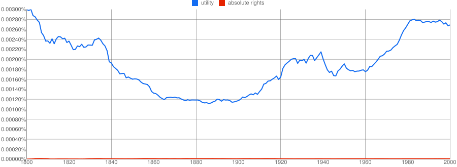

I have proven without a shadow of doubt that utilitarianism is much more popular than rights theories.

- 
- chart.png (39.13 KiB) Viewed 567 times
I have proven without a shadow of doubt that utilitarianism is much more popular than rights theories.
- chart.png (39.13 KiB) Viewed 570 times
I have proven without a shadow of doubt that utilitarianism is much more popular than rights theories.
- chart.png (39.13 KiB) Viewed 574 times
I have proven without a shadow of doubt that utilitarianism is much more popular than rights theories.
- chart.png (39.13 KiB) Viewed 600 times
I have proven without a shadow of doubt that utilitarianism is much more popular than rights theories.
- chart.png (39.13 KiB) Viewed 625 times
I have proven without a shadow of doubt that utilitarianism is much more popular than rights theories.
- chart.png (39.13 KiB) Viewed 643 times
I have proven without a shadow of doubt that utilitarianism is much more popular than rights theories.
- chart.png (39.13 KiB) Viewed 656 times
I have proven without a shadow of doubt that utilitarianism is much more popular than rights theories.
- chart.png (39.13 KiB) Viewed 705 times
I have proven without a shadow of doubt that utilitarianism is much more popular than rights theories.
- chart.png (39.13 KiB) Viewed 706 times
I have proven without a shadow of doubt that utilitarianism is much more popular than rights theories.
- chart.png (39.13 KiB) Viewed 2248 times
I have proven without a shadow of doubt that utilitarianism is much more popular than rights theories.
- chart.png (39.13 KiB) Viewed 2249 times
I have proven without a shadow of doubt that utilitarianism is much more popular than rights theories.
- chart.png (39.13 KiB) Viewed 3026 times